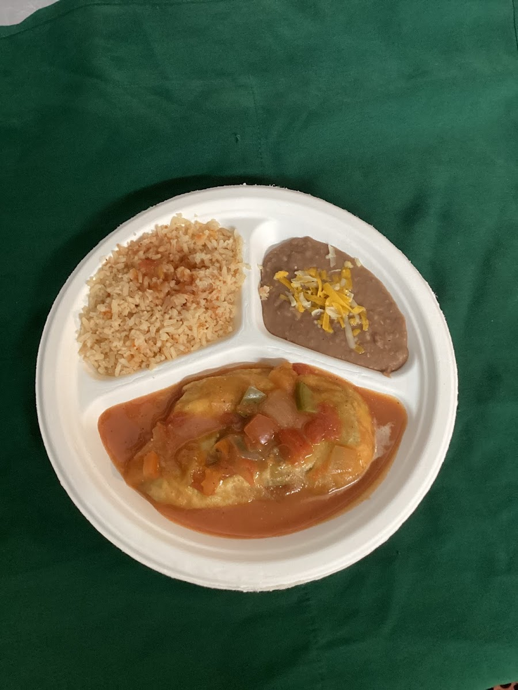
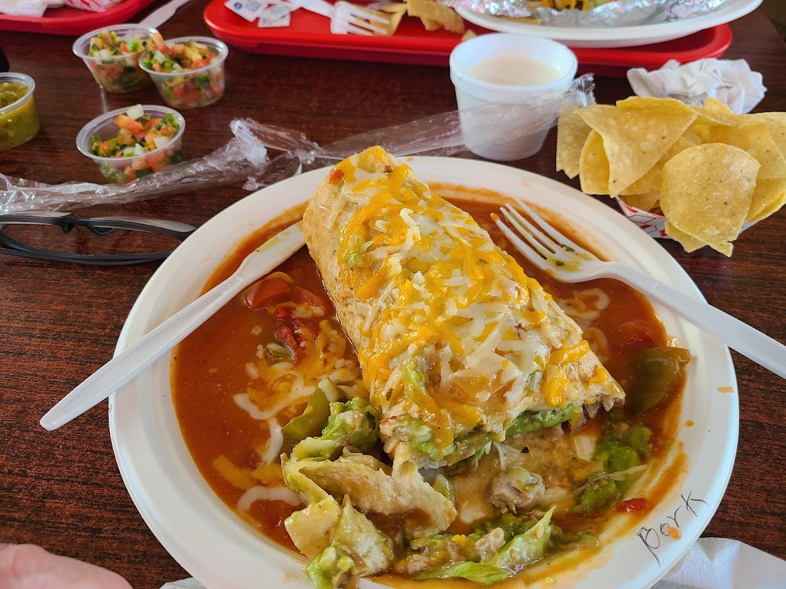
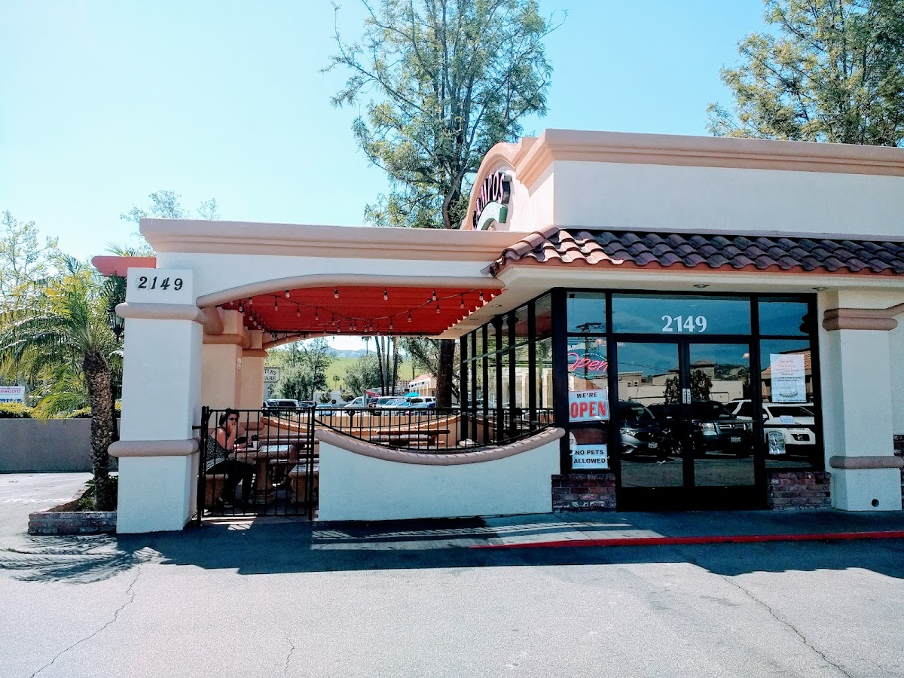
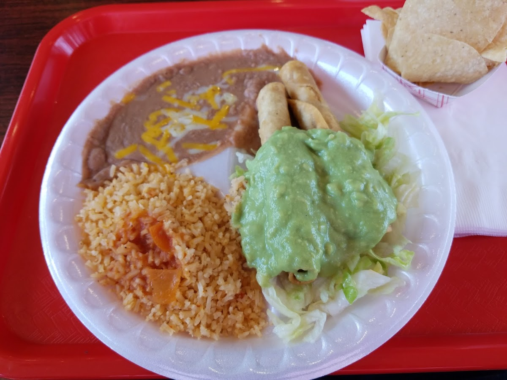
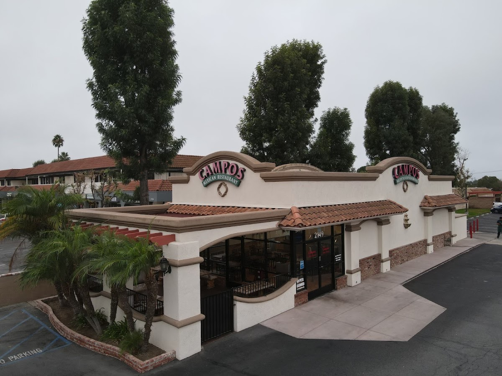

Built around the burrito
Choose classics like Beans & Cheese, Our Famous Avocado, Carne Asada, Campos Special, El Horneado, and the oversized Panzon.
Open daily 7:30 AM - 9:00 PM
A relaxed Mexican favorite on Tapo Street serving loaded burritos, breakfast plates, crispy tacos, taquitos, horchata, and the kind of portions that make regulars come back.



About Campos
Campos Famous Burritos is known for standard and breakfast burritos, combo plates, taquitos, hard-shell tacos, and quick service in a simple neighborhood setting. This redesign keeps the old-school charm while giving the restaurant a cleaner, stronger digital presence.
Choose classics like Beans & Cheese, Our Famous Avocado, Carne Asada, Campos Special, El Horneado, and the oversized Panzon.
Breakfast burritos and breakfast combination plates are served from 7:30 AM to noon.
Public listings note outdoor seating, takeout, dine-in, curbside pickup, accessible seating, and free parking.
Local favorites
A tighter showcase of the most compelling items from the public menu and customer-favorite mentions.
Choice of meat, beans, rice, cheese, lettuce, onion, tomato, sour cream, guacamole, and sauce.

Grilled steak with rice, beans, and salsa fresca. A dependable Campos staple.
Available as a burrito, side order, or combination plate with beans and rice.

Order salsa fresca with chips, burritos, tacos, or combo plates for extra brightness.
Photo gallery
A visual refresh using restaurant, menu, and dish photos from public restaurant/menu pages.
Community notes
"The hard shell tacos are packed, the portions are generous, and the food tastes like classic comfort food."
Public review summary"Fast service, friendly staff, and the patio makes it an easy stop when the restaurant is busy."
Public listing summary"Breakfast burritos, taquitos, salsa, and carne asada plates are frequent favorites across public menu mentions."
Menu highlightsVisit Campos
Use the embedded Google map for directions and local business information, or call ahead to confirm menu availability.